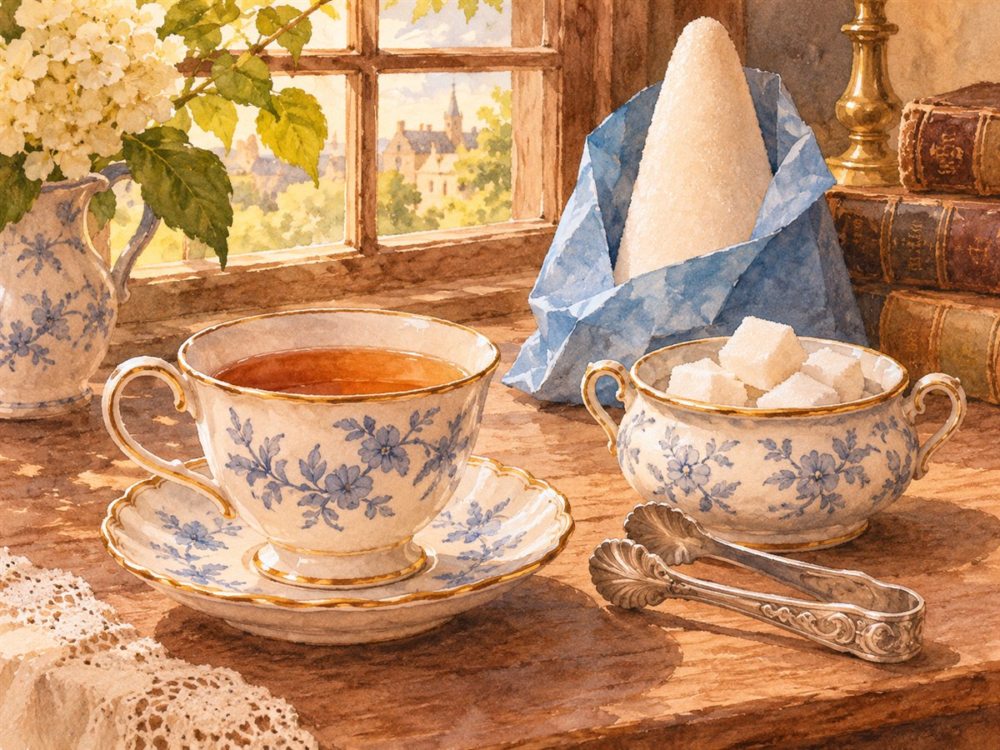
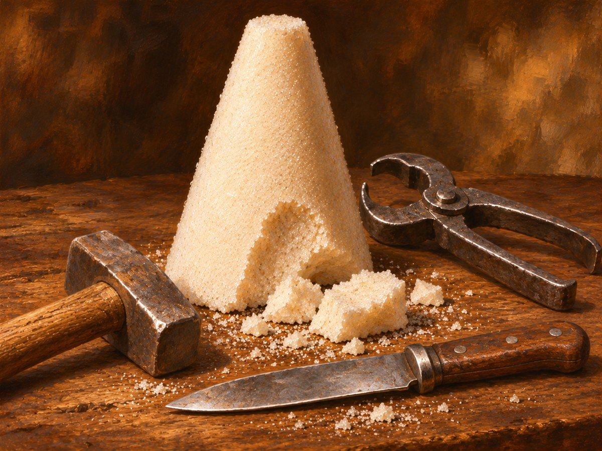
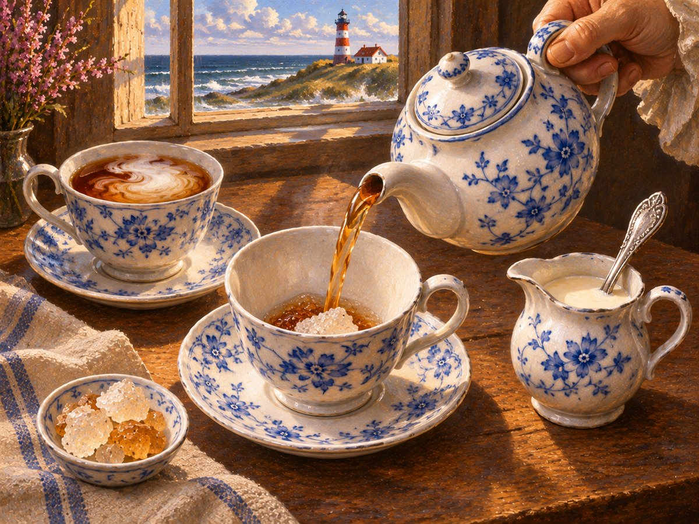

Cukor v šálke čaju
Dieťa zje čokoládu a obal šikovne schová. Mama to aj tak zistí – stačí sa pozrieť na jeho ústa. S čajom to bolo kedysi podobne: kto ho chcel pred úradmi skryť, zabudol na cukor.

Čaj, ktorý nebol v žiadnych papieroch
V Anglii 18. storočia čaj pil skoro každý, kto si ho mohol dovoliť. Bol však drahý – najmä pre dane. Štát z neho bral často viac, než stál samotný čaj. A keď je niečo pre dane príliš drahé, nájdu sa ľudia, ktorí to dovezú načierno.
Pašeráci vozili čaj cez more a tajne ho vykladali na brehu. Koľko ho bolo, presne nevie nikto. Odhady sa líšia: podľa niektorých sa načierno dostala do krajiny polovica všetkého vypitého čaju, podľa iných až tri štvrtiny. Úradné záznamy teda ukazovali len časť pravdy – ako ten schovaný obal od čokolády.
Stopa v cukorničke
Lenže Angličania si čaj sladili. A cukor sa do krajiny dovážal normálne, s papiermi a s clom. Čaj sa dal schovať, cukor do neho už nie.
Prví na to prišli poctiví obchodníci s čajom. Pašeráci im kazili obchod, lebo predávali lacnejšie. V roku 1744 dali obchodníci vytlačiť brožúrku, ktorá sa pokúsila vypočítať, koľko čaju sa v Anglicku vypije – podľa toho, koľko sa spotrebuje cukru. Vyšlo jej asi dva milióny libier čaju ročne. To bolo oveľa viac, než koľko ho legálne doviezla Východoindická spoločnosť.
Presný ten výpočet nebol – bolo v ňom veľa odhadovania. Ale ukázal to podstatné: čaju sa pije oveľa viac, než priznávajú papiere. O niečo neskôr, v roku 1755, odhadol londýnsky obchodník Jonas Hanway, že sa s čajom minie asi tretina všetkého cukru, ktorý sa do Británie doviezol.
Pašerák teda čaj skryl, ale stopu nechal tam, kde by ju nikto nehľadal – v cukorničke.
Čokoláda na ústach
V roku 1784 anglická vláda daň z čaju prudko znížila – zo 119 percent na 12,5 percenta. Poradil jej to vraj Richard Twining z rodiny londýnskych obchodníkov s čajom. Pašovať sa zrazu neoplatilo.
A čo sa stalo? Východoindická spoločnosť predávala pred zmenou asi 5,8 milióna libier čaju ročne. O pár rokov neskôr to bolo takmer 17 miliónov – skoro trikrát viac. Ľudia nezačali zrazu piť trikrát viac čaju – pili ho aj predtým. Len sa ten čaj konečne ukázal v papieroch. Presne ako čokoláda na detských ústach.
Čaje firmy Twinings sú aj v mojej zbierke: pozrieť obaly Twinings.
Homoľa, kladivko a kliešte
Cukor sa dlho nepredával sypaný ani v kockách, ale v homoliach – tvrdých bielych kužeľoch. Vyrábali sa tak, že horúci cukrový sirup sa nalial do kužeľovitých foriem z pálenej hliny. Cez dierku v špičke odtiekla tekutina a vo forme vykryštalizoval cukor. Potom sa forma otočila a vypadla z nej homoľa.
Taká homoľa bola tvrdá ako kameň. Doma sa z nej kúsky odbíjali kladivkom, sekali nožom alebo štípali špeciálnymi kliešťami na cukor.
V Rusku sa čaj pil vprikusku – „s prikusovaním“. Kúsok tvrdého cukru sa držal v ústach alebo sa z neho odhryzlo a zapíjalo sa čajom. Cukor bol vzácny a v niektorých domoch ho gazda zamykal aj s čajom do truhlice a kľúč nosil pri sebe.

Kocka cukru z Dačíc
Kocku cukru vymyslel náš sused. Jakub Kryštof Rad riadil od roku 1840 cukrovar v Dačiciach na južnej Morave. Podľa rozprávania sa jeho manželka porezala, keď sekala homoľu, a poprosila ho, či by sa cukor nedal predávať v menších kúskoch.
Rad zostrojil lis a 23. januára 1843 naň dostal patent. Kocky predával ako „čajový cukor“ – teda cukor práve do čaju. Veľké šťastie mu to však neprinieslo. Podnik sa nedaril, v roku 1846 sa Rad vrátil do Viedne a na vynález sa zabudlo. Kocky cukru sa začali vyrábať vo veľkom až o tridsať rokov neskôr, iným spôsobom.
S kockou cukru sa dá urobiť pekný pokus – pozrite si Kocku cukru v Čajových drobnostiach.
Sladiť, či nesladiť?
Cukor chuť čaju vyzdvihne aj stlmí – podľa toho, aký čaj pijete.
- Silný čierny čaj býva horkastý a trpký, akoby „sťahoval“ ústa. Cukor tieto chute zjemní. Preto sa silný čierny čaj odjakživa sladil.
- Ovocné čaje s ibištekom sú kyslé. Cukor kyslosť vyrovná a ovocie potom chutí a vonia výraznejšie.
- Jemné čaje – zelený, biely – majú drobné vône, ktoré cukor ľahko prekryje. Znalci ich preto pijú bez cukru.
Kto chce spoznať, ako čaj naozaj chutí, nech skúsi prvý dúšok bez cukru. A potom nech si osladí, ak chce. 🙂
Tri poschodia v ostfrízskej šálke
Najviac čaju v Nemecku – a v Európe – vypijú v Ostfrízsku, na severozápade Nemecka pri Severnom mori. Podľa nemeckého čajového zväzu je to okolo 300 litrov na osobu za rok. Priemerný Nemec vypije asi desaťkrát menej.
A pijú ho po svojom. Do šálky sa najprv vloží veľký kus kandizovaného cukru, ktorý volajú Kluntje. Zaleje sa silným čiernym čajom. Navrch sa lyžičkou opatrne pri okraji pridá smotana, ktorá sa v čaji rozvinie ako obláčik. A potom to najdôležitejšie: nemieša sa!
Najprv cítite jemnú smotanu, potom silný čaj a nakoniec sladkosť zo dna. Tri chute v jednej šálke. Zvykom sú aspoň tri šálky. Kto už nechce, položí lyžičku do šálky.
Ostfrízska čajová kultúra je od roku 2016 zapísaná v nemeckom zozname nehmotného kultúrneho dedičstva UNESCO.

Zdroje
- Tea, Tax, and Smuggling – Intoxicating Spaces (anglicky)
- Tea Smuggling – UK Tea & Infusions Association (anglicky)
- Commutation Act 1784 – Wikipedia (anglicky)
- K. N. Chaudhuri: The Trading World of Asia and the English East India Company – Imports from China (anglicky) – brožúrka z roku 1744
- Hutková a kol.: Company-State at Home – Past & Present, 2025 (anglicky) – predaj čaju pred a po roku 1784
- D. Richardson: The Slave Trade, Sugar, and British Economic Growth, 1748–1776. Journal of Interdisciplinary History, 1987 – odhad Jonasa Hanwaya z roku 1755 (anglicky)
- Zucker – Planet Wissen (nemecky)
- Jakob Christof Rad – Wikipedia (anglicky)
- Kostkový cukr – Goethe-Institut (česky)
- Ostfrízsky čaj – Bünting Teemuseum (nemecky)
- Ostfriesentee richtig zubereiten – Utopia (nemecky)
Text pripravil Claude, spolutvorca stránky, podľa nápadu autora zbierky. Spomienky sú autora zbierky.